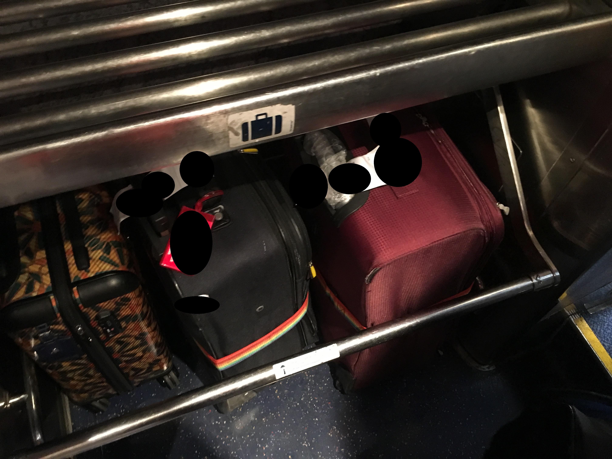
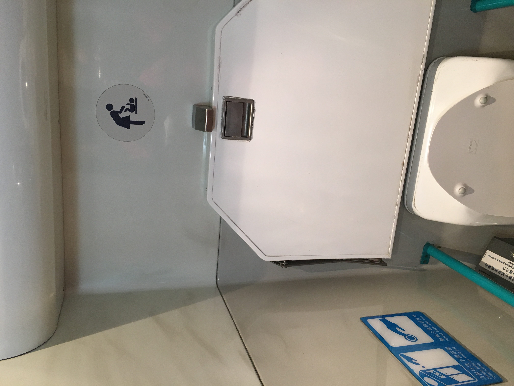

Ktt Guangzhou East to Hong Kong
After my flight from Beijing, I went to Guangzhou East and met up with a few friends of mine. We had lunch at a mall across the street. That is for after the train report. We entered via underground tunnel, so no entrance pics today.
Upstairs was a waiting lounge on the top floor.
Here was my ticket (the said friends brought it for me a few days ago). It's just over $30 USD for a class above First Class, a two-hour train ride.
Passing through Chinese exit formalities (immigration and customs) to enter another waiting room, to buy a bottle of water for the ride, and line up.
Then it was downstairs to the platform level.
Where the Ktt train waits.
On the other side of the fence is the 25T train provided by the Chinese (I think the Guangzhou Railway Bureau provides these special trainsets).
Then let’s hop in (carriage 6 is not ours, but that was the one I grabbed a photo of). Carriage 4 is the “Premium Class” carriage, if I remember correctly.
Where it was to the vestibule.
 And large bags were stored.
Then upstairs to the upper level.
Here’s a picture looking down, this was during the middle of the ride.
And the carriage connections…
With the seat came with a massive table. It was used for completing the landing card and reading a book.
“Drink” and snack were served… that water was consumed in a big gulp, while that snack was consumed within a few minutes. There was a menu of other things for purchase. I’m glad I brought water for the ride…
 I visited the bathroom. It wasn’t the cleanest, but it did the job.
In it came with so many signs.
 Also, enjoy the views on the ride…
Also, enjoy the views on the ride…
 And a diesel locomotive carrying freight.
And a diesel locomotive carrying freight.
 This train stops at Changping before arriving Hong Kong.
This train stops at Changping before arriving Hong Kong.
This train did the job, and I’m kind of glad I took this detour to meet up with some friends of mine. Seat pitch was decent, and there was… refreshment of some sort. Though next time, I’d fly into Hong Kong from Beijing rather than take this detour (meals are actually provided on this route).
Oh, here’s the food from lunch with friends that I was talking about earlier. Unfortunately, I don’t remember the name, but it was decent enough to hold me until Hong Kong.